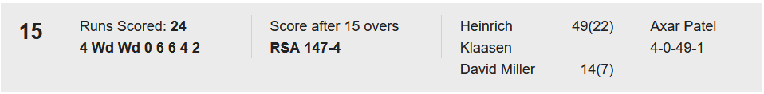

India vs South Africa 2024 WT20 FINAL
This project analyzes both teams scores at the end each overs. The main objective was to provide insights on which team is ahead at that point of time.


Project Objectives
- Analyze player performance metrics.
- Visualize match statistics over time.
- Provide actionable insights for team selection.
Technologies Used
The project utilized the following technologies:
- Python for data analysis and manipulation
- Pandas and NumPy for data processing
- Matplotlib and Seaborn for data visualization
Databricks Notebook
Challenges and Solutions
During the project, we faced challenges in handling missing data. We implemented data imputation techniques to ensure the analysis was robust.
Conclusion
The project successfully provided insights that can help teams make informed decisions for future matches.